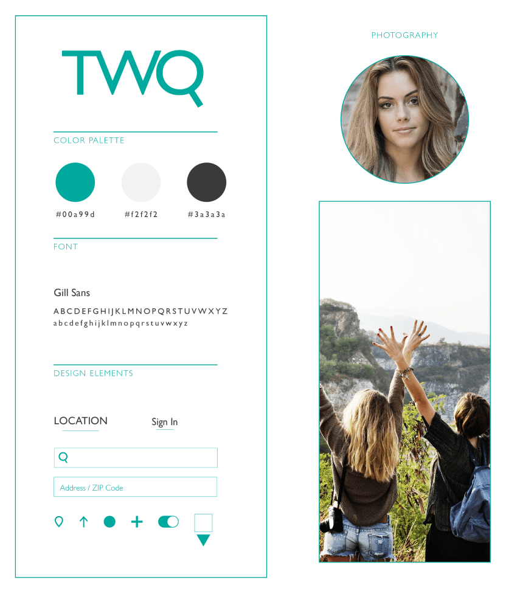
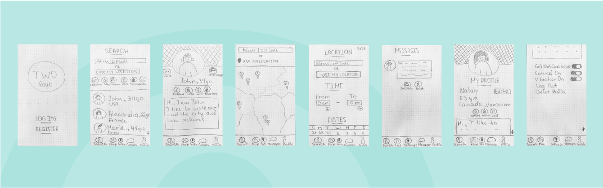
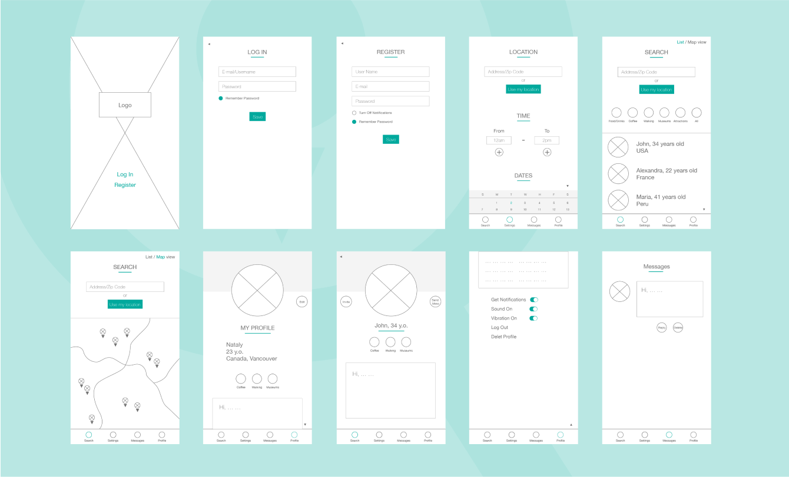
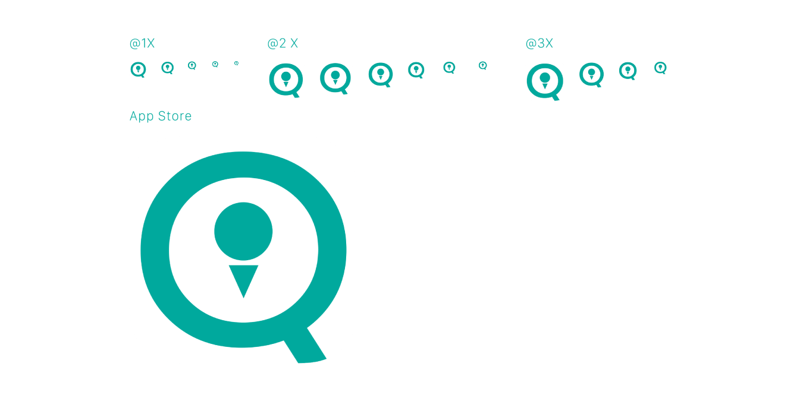
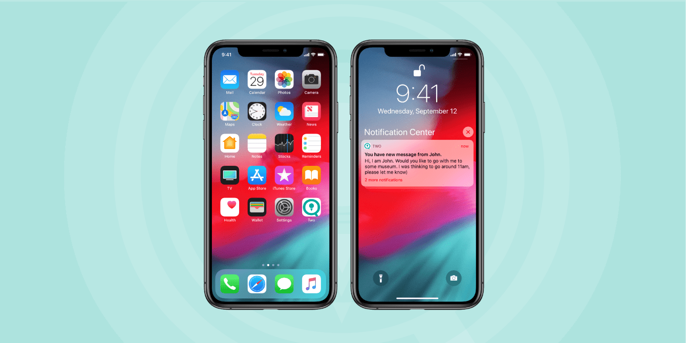
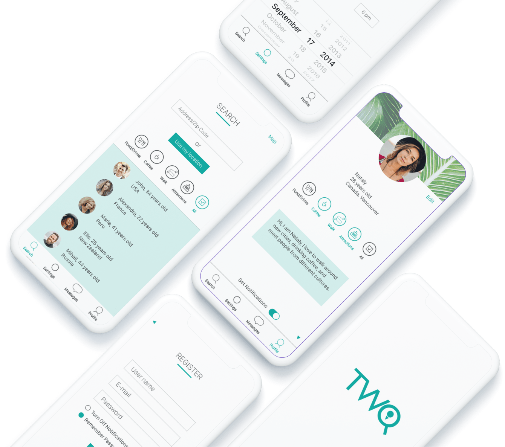

TWO is a school project for a web design class where I designed an app that helps people find companions to explore new locations together while on a business trip. The project involved coming up with a fresh app concept, creating detailed sketches and wireframes, and conducting user testing to ensure a user-friendly design
Persona
Description
For people who have limited time, very good in using phones, during business trip.
Goal
To find a person to go to see places around the city while her business trip.
To find a person with similar interests.
Frustation
Feels lonely or uncomfortable to travel around the city along.
Design System

Sketches

Wireframes

App Icons



User Testing
User 1: Luis Alberto Paredes, 38 years old, Country manager, Travels often for business
To send message to John from San Francisco
Flow:
Tester was able to log in.
Tester got a bit confused by getting to Settings page right after log in.
Tester was able to process to Search and find John.
Tester was confused about finding Invite button instead of Send Message button.
Results:
Tester was able to Send Message, but it took longer than supposed to.
Solution:
Change Setting Page for Search Page that follows right after Sign In or
Register Create Send Message button instead of Invite.
User 2: Olga Rizzi, 32 years old, Photographer, Travels sometimes for business
To find people who would like to go for a coffee.
Flow:
Tester was able to navigate to Search Page and to find Coffee Preference Icon.
Results:
Tester completed the task easily.
Solution:
No need.
To find people in France.
Flow:
Tester was able to navigate to Search Page and to find people in France.
Results:
Tester completed the task easily.
Solution:
No need.
User 3: Rafael Gonzalez, 38 years old, Senior Software Developer, Travels sometimes for business
To Log out.
Flow:
Tester was able to log In.
Tester proceed to Profile easily and was able to log out.
Results:
Tester was able to log out without any troubles.
Solution:
No need.
To find people near you.
Flow:
Tester was able to find right button fast.
Results:
Tester was able to navigate to Use My Location without any troubles.